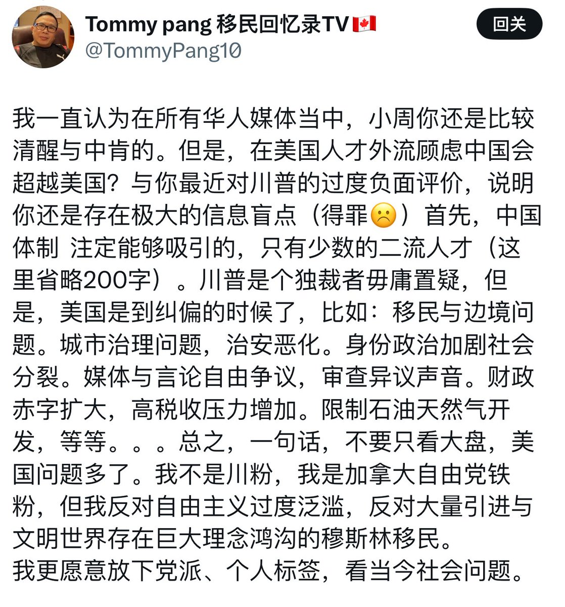

月影独下
@tadatsukiei
@laozhouhengmei 救中国，不需要有华必反的支黑，需要的是理性、民主、真相。

老周横眉
@laozhouhengmei
这位读者举出的所有美国需要纠偏的点我大部分都同意。问题是：川普纠偏什么了？
他自己都说了：“川普是个独裁者毋庸置疑，但是….”。
这类人最大的问题就在于，他们觉得只要能解决这个那个问题，那么独裁者是可以接受的。
从这句话就已经知道，这就是我经常说的那类人：肉身已经出墙，精神没出。 https://t.co/EQcwuzKve7